Pengabdian Masyarakat
Implementasi teknologi dan edukasi sistem Internet of Things (IoT) untuk masyarakat. Salah satunya melalui program Ecosave, sebuah sistem informasi pencatatan timbangan sampah yang terintegrasi langsung dengan alat penimbang berbasis IoT.

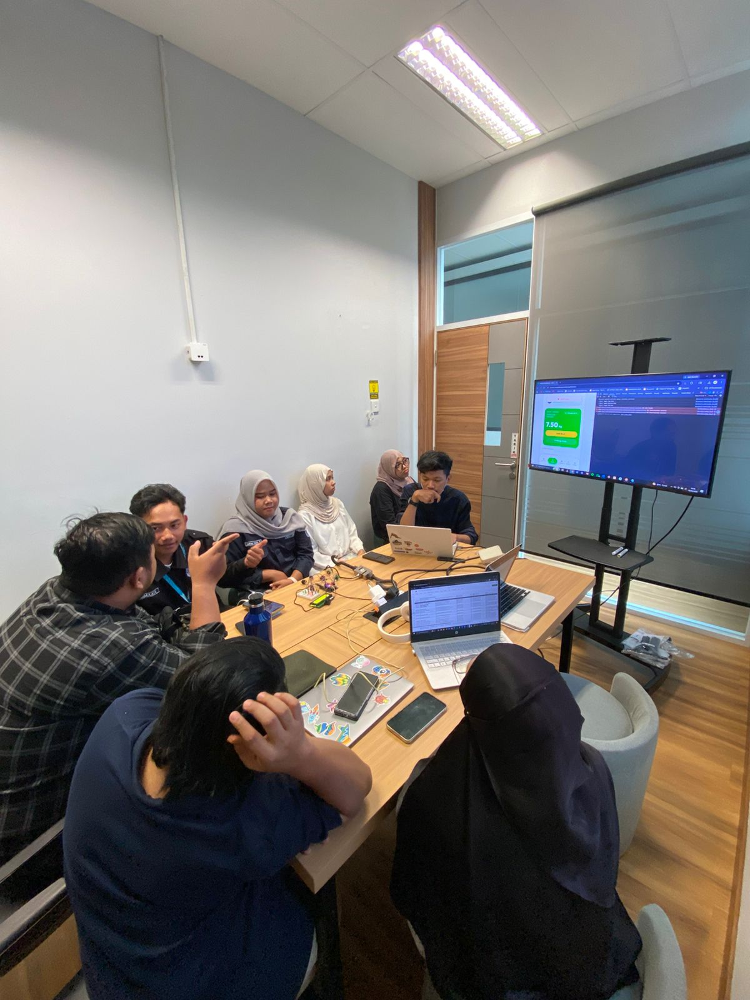
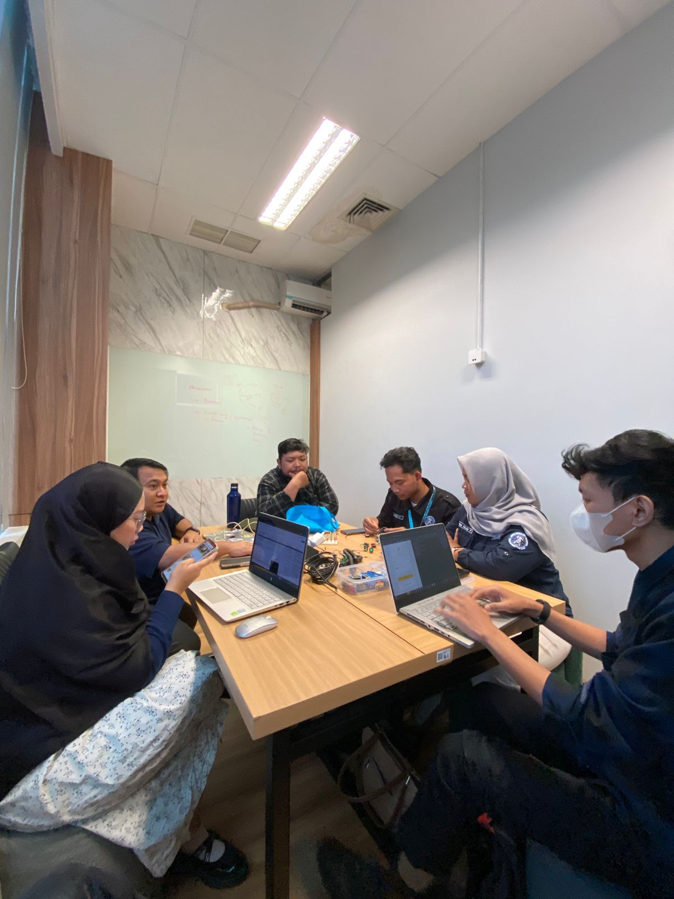
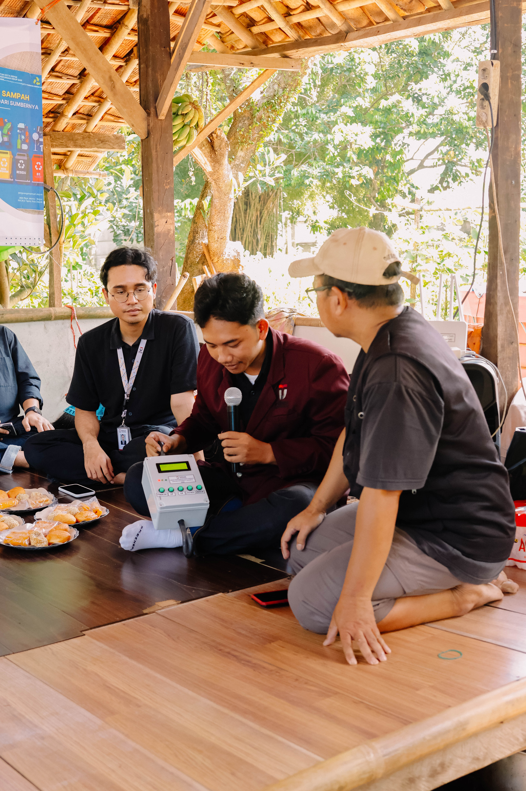
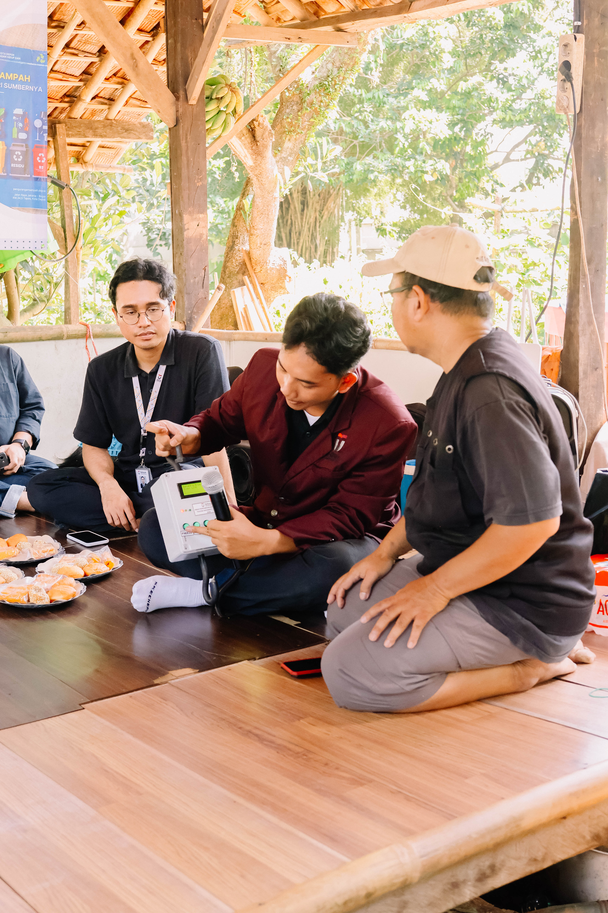
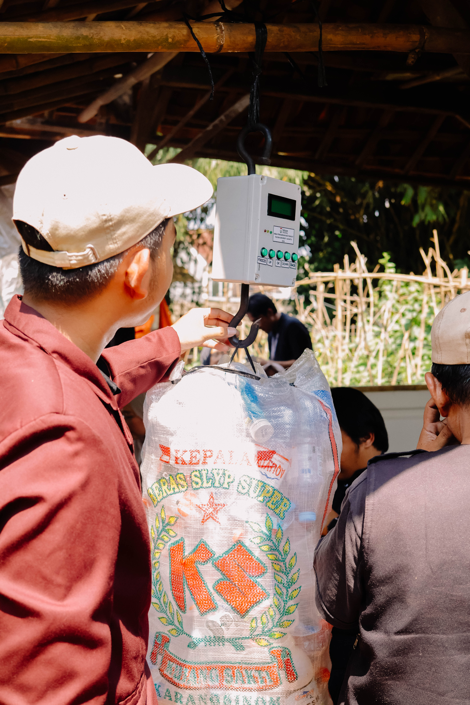
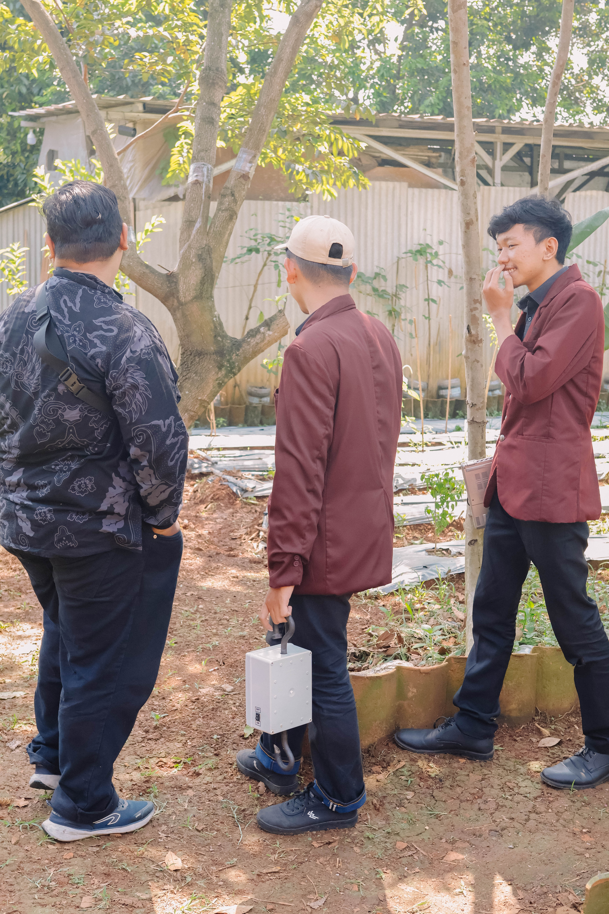
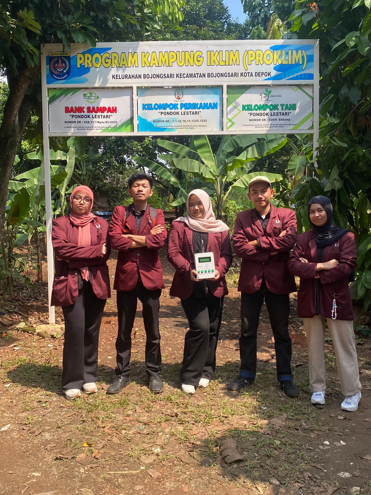
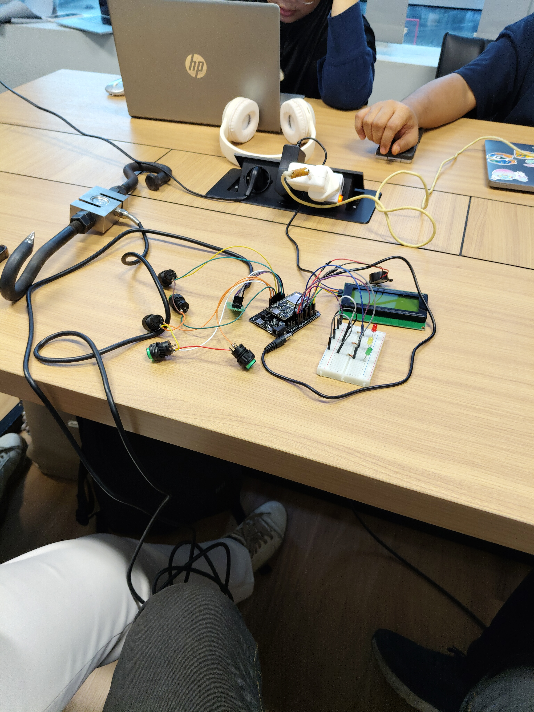
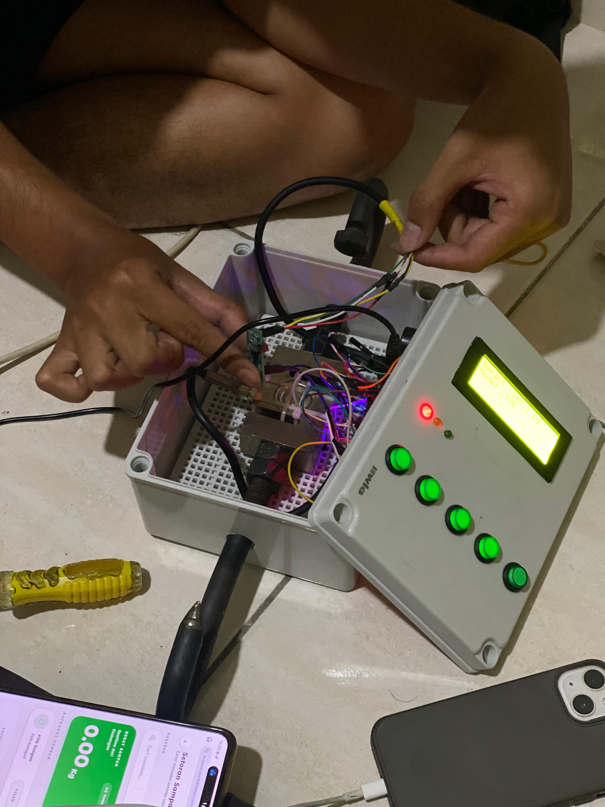
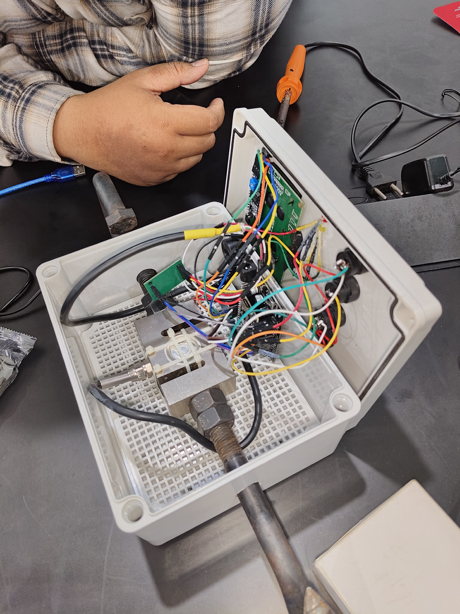

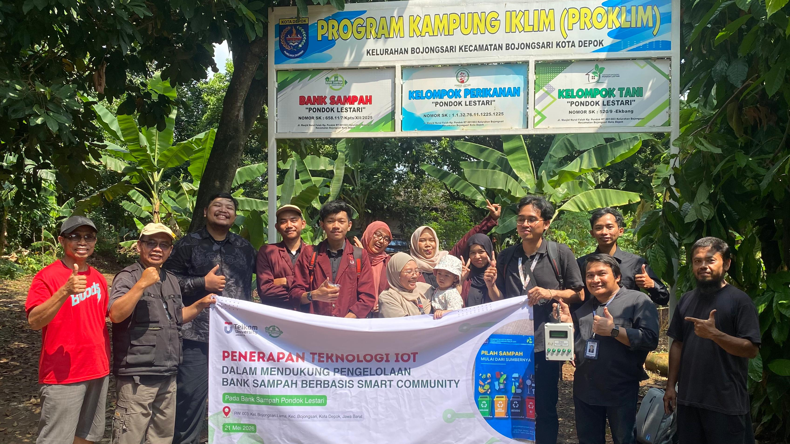